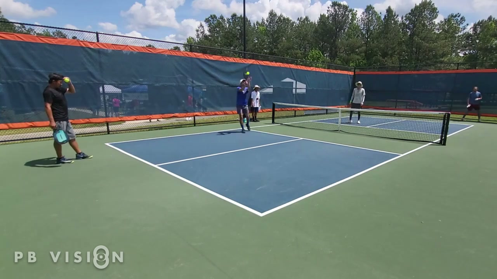

Order: far_left → far_right → near_left → near_right (outer doubles-court corners, where
baseline meets sideline). "Near" = the baseline closest to the camera (bottom-left of frame),
"far" = the baseline beyond the net (right side). Zoom your browser (⌘+) for precision —
coordinates are auto-converted to true image pixels. Wrong click? Press R to restart.
When done, copy the JSON below back to engineering (or File→Save this page's textarea content as
owner_court_corners.json in this folder).
